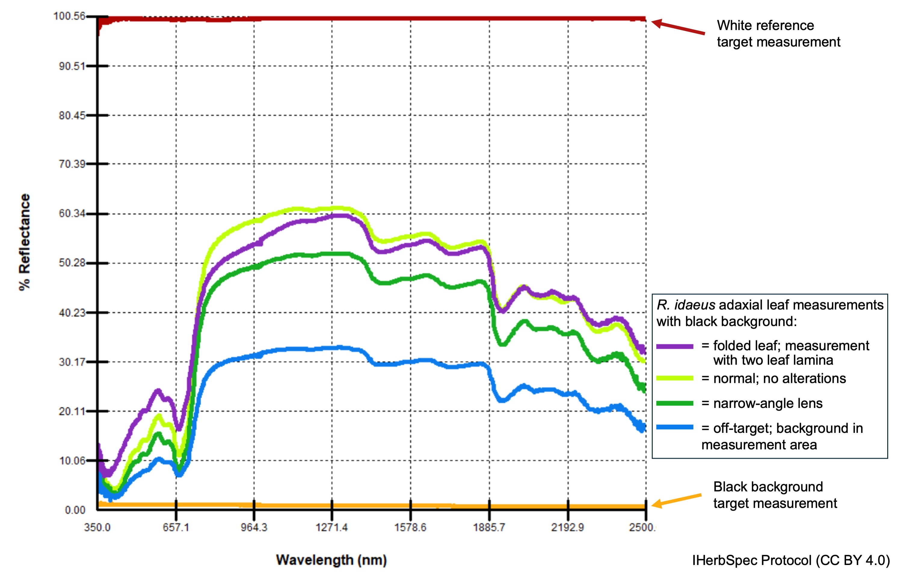

Appendix I – Considerations Regarding the Number of Measurements per Specimen
Considerations
Spectral measurements of plant tissues are highly sensitive to both instrument configuration and small spatial differences across target tissue. Changes in the optical probe geometry in relation to the tissue—such as tilting, poor contact with the leaf surface, partial coverage of the measurement area (Fig. A1), or micro-contaminants like debris—can introduce technical errors. In addition, leaf surface microtopography, anatomical variation, and alterations from herborization (e.g., drying distortion, discoloration, or degradation) all contribute to variation in reflectance spectra (Cavender-Bares et al. 2025).

backgroundInMeasurement = TRUE; blue), and a folded leaf (purple). All measurements were made of the same tissue using an SVC HR-1024i spectroradiometer.These considerations support the IHerbSpec Protocol requirement of collecting a minimum of three representative measurements per adaxial and abaxial leaf surface, when suitable tissues for both surfaces are available. Three measurements are necessary to calculate a mean spectrum and its variance. The protocol further recommends collecting five measurements per surface to achieve a more robust spectral characterization and to meet the threshold for improved performance in classification models. The protocol allows for users to make these minimum or higher measurements across one or many leaves. For other tissue types, at least three measurements are recommended, with more encouraged when feasible. Below, we elaborate justification for this recommendation.
Several studies have demonstrated improved model performance when multiple measurements per individual specimen are averaged, including those by Durgante et al. (2013; Figs. A2, A3), Neto-Bradley et al. (2025), and S. Bazan et al. (Unpubl.). The IHerbSpec Protocol’s recommendation of five measurements is based on empirical evidence that model accuracy gains tend to stabilize beyond five to ten measurements per tissue (Fig. A2), although the optimal number may vary depending on tissue type, instrument sensitivity, and modeling goals. Beyond classification, IHerbSpec members are investigating how replicate measurements affect the accuracy and robustness of trait prediction models, evaluating both the benefits of averaging spectra and the variation in predicted trait values from unaveraged measurements of the same tissue.
Another important recommendation in the IHerbSpec Protocol is to measure both adaxial and abaxial leaf surfaces. These surfaces differ in anatomy and function due to evolutionary adaptations for light capture, gas exchange, and environmental stress. Such structural differences are consistently reflected in their spectral signatures (see Fig. 1.1), and we recommend measuring both surfaces—when suitable tissue is accessible—to capture this biologically meaningful variation.
Within the context of a large-scale macroevolutionary project focusing on Annonaceae (ERC GLOBAL project; PI Thomas Couvreur), researchers aimed to measure spectra on one specimen per species with the intent to capture as much variation as possible for each specimen. In accordance with the protocol established at the Centre de Coopération Internationale en Recherche Agronomique pour le Développement (CIRAD), researchers decided to make 20 spectral measurements per specimen to develop their spectral library for 1700 Annonaceae species preserved in over 30 different herbaria.
This decision was informed by preliminary experiments demonstrating that spectral stability improves with larger numbers of measurements (Fig. A3). The choice of 20 spectra was also appropriate because of variation in the number and size of leaves, allowing for multiple measurements of multiple leaves or single large leaves that filled an entire herbarium sheet. It also allowed for poor-quality spectra to be discarded based on downstream filtering criteria while still retaining a large number of measurements per specimen.
Overall, given the sensitivity of spectral data, research projects are encouraged—when feasible—to collect more than five measurements per tissue, including across different tissue units within an individual. This enables further assessment of intra-individual spectral heterogeneity and its impact on downstream analyses.
The marginal cost of additional measurements is relatively low across instruments, with a single measurement typically completed within 1 to 10 seconds. Nevertheless, determining the appropriate number of measurements remains a critical design consideration, particularly in large-scale digitization projects involving significant resource investment.